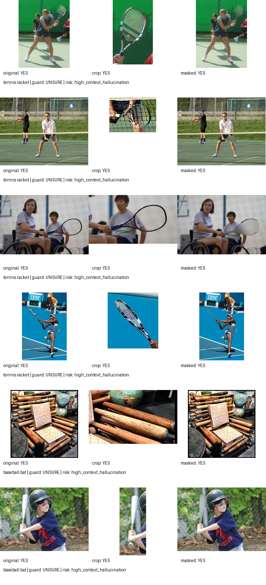

Select COCO instances
Sample target object categories with usable annotations and moderate object area.
Audited COCO counterfactuals · local VLMs · black-box abstention
COCO-Ghost tests whether VLM object-presence claims persist under conservative bbox occlusion. GHOST-Guard accepts a claim only when the original image and crop support it, and the claim disappears after removal.
Scaled clean-removal experiment
The scaled run uses padded bounding-box occlusion with solid local-mean fill. All 200 removals were labeled clean, so the headline ghost rates are not driven by visible object-shaped blur.
| Model | Original YES | Crop YES | Masked YES | Clean Ghost Rate | Guard Accept | Guard Abstain |
|---|---|---|---|---|---|---|
| qwen2.5vl:7b | 96.0% | 94.5% | 49.5% | 51.6% | 44.5% | 51.5% |
| qwen2.5vl:3b | 88.5% | 80.0% | 43.0% | 47.5% | 30.0% | 58.5% |
| llava:7b | 43.0% | 60.5% | 14.5% | 33.7% | 24.5% | 18.5% |

Safety wrapper behavior
A crop-only gate checks local recognizability, but it does not test whether an object claim disappears after the object is removed. On Qwen2.5-VL 7B, crop-gating still accepted 51.4% ghost claims. GHOST-Guard adds the masked counterfactual check and accepts 0.0% detected ghost claims.
Main finding
Even under clean bbox occlusion, local VLMs still report removed objects in 33.7% to 51.6% of originally recognized cases.
Method
Sample target object categories with usable annotations and moderate object area.
Save original, object crop, and bbox-occluded image with the target region replaced by local-mean color.
Label counterfactual quality and report clean-removal results separately from artifact-prone cases.
Accept only original YES, crop YES, masked NO. Otherwise downgrade suspicious claims to UNSURE.
Qualitative examples

Earlier blur-fill masks preserved object-shaped residuals in some examples. The scaled headline therefore uses bbox-solid occlusion and reports artifact labels, trading realism for a cleaner evidence test.